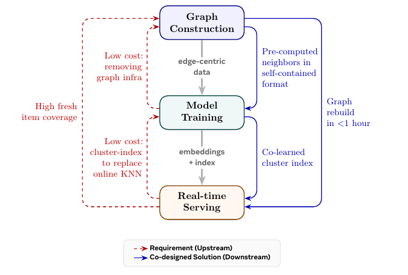
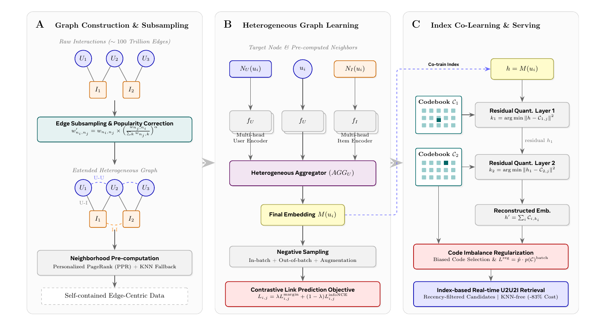

目录 · 10 节
1它到底在解决什么问题？2流程总览：三个环节互相提要求3建图：边从哪来，怎么从几百万亿压到几千亿4邻居离线算好：用 PPR 代替在线采样5训练：一个简单的模型6服务：用聚类索引替代在线 KNN7实验：召回、索引质量和消融8我认为它的局限9一个推荐团队可以怎么试10评价分享 SHARE
做图召回的团队值得读这篇，因为它把很多人默认要花大钱的两件事省掉了：在线图存储和采样引擎、以及在线 KNN 服务，换来的召回效果反而更好。核心思想一句话：邻居离线用个性化 PageRank（PPR）算好写进训练数据，聚类索引和 embedding 一起训，线上找相似用户只剩查一个簇。在 Meta 的生产数据上，用户 embedding 的 Recall@5 是 0.143，作为对照的 GAT-DGI 只有 0.038，约 3.8 倍；U2U2I 的线上服务成本降了 83%；14 天 A/B 里 CTR 最多 +0.96%，CVR 最多 +2.75%，已支撑 20 多次召回上线。
它到底在解决什么问题？
先看一个示意场景。一个短视频平台想做“和你口味相近的人最近在看什么”这一路召回，也就是 U2U2I：先找相似用户，再取他们最近互动过的视频。另一路是 U2I2I：先取用户互动过的视频，再找相似视频。两路都只要求 embedding 把“谁和谁像”表达好，所以适合用图模型来学。
到了 Meta 的规模，三个环节各自卡住：
| 环节 | 朴素做法 | 卡在哪里 |
|---|---|---|
| 建图 | 把所有共同互动都连成边 | 原始共同互动图有几百万亿条边，建不出来 |
| 训练 | 训练时在线从图存储里采样邻居 | 要一整套图存储和分布式采样服务，多跳采样时显存占用忽高忽低 |
| 服务 | 线上对相似用户做 KNN | 作者发现候选用户只取最近约 15 分钟活跃的人效果最好，这个池子几分钟一变，在线 KNN 要几千台机器，离线预算好的 KNN 表又跟不上 |
作者的主张是，这三个环节不能分开优化，一个环节的要求要倒推到上游去改。
流程总览：三个环节互相提要求

按数据流的顺序，整套系统是这样的：
| 阶段 | 输入 | 做什么 | 输出 |
|---|---|---|---|
| 建图 | 过去 24 小时的点击、点赞、分享、购买 | 连三类边、压热门、删边、用 PPR 预算邻居 | 按边组织、自带邻居的训练数据 |
| 训练 | 上一步的数据，不访问任何图服务 | 对比学习训练用户和物品 embedding，同时训一个两层的聚类码本 | embedding，加每个用户的簇编号 |
| 服务 | 簇编号和实时互动流 | 每个簇维护一个“簇内活跃用户最近互动物品”的队列 | 线上直接读队列，不做 KNN |
整张图每 3 小时重建一次，每次约 1 小时建完，从互动发生到 embedding 刷新端到端约 2 小时。下面按这个顺序拆开讲。

建图：边从哪来，怎么从几百万亿压到几千亿
图里只有用户和物品两类节点，三类边全部来自互动数据，不用社交关系或知识图谱：
- U-I 边：用户在过去 T 小时内互动过这个物品就连一条，权重按互动类型取预设值，反映业务价值。
- U-U 边：两个用户在过去 T 小时内共同互动过的物品数达到阈值 才连边。权重是把每个共同物品上两人的互动权重相乘、加总，再取对数。取对数是为了让高频用户和低频用户的边权落在同一个量级。
- I-I 边：和 U-U 对称，看两个物品被多少共同用户互动过。
作者说试过把一种节点对拆成多种细分关系，图变大了，效果没有相应提升，所以每对节点类型只保留一种共同互动关系。
为什么要压热门？ 热门物品和谁都有共同互动，它的边反映的是热度，不是兴趣。论文对 I-I 边权做如下修正：
是物品 i 到 j 的原始边权，括号里是这条边占物品 j 全部边权的比例，。j 越热门，这个比例越小，边就被压得越狠。手算一个示意例子：j 是爆款，总边权 1000，和 i 的边权是 10，比例 0.01，0.01 的 0.3 次方约 0.25；j 是小众视频，总边权 50，和 i 的边权同样是 10，比例 0.2，0.2 的 0.3 次方约 0.62。同样一条权重 10 的边，连向爆款的只剩约四分之一，连向小众视频的保留六成多。修正后 i→j 和 j→i 的权重不再相等，两个方向都保留。
删边分两步：U-U 边只保留约 1 亿个按业务价值挑出的用户（每天更新），U-I 边保留所有节点；然后每个节点只留权重最高的 条边。这样边数从几百万亿降到几千亿。删边之后，节点分成两组：第一组在图里还有同类型邻居，它们和它们的边组成“主干图”；第二组没有同类型邻居，只出现在完整的图里。
邻居离线算好：用 PPR 代替在线采样
这是全文最关键的取舍。作者认为相似度召回依赖的结构信号变化慢，邻居可以离线算好，这样训练时完全不需要图服务。
具体做法借鉴 PinSage：在主干图上为每个节点跑个性化 PageRank（PPR），用随机游走近似。从节点出发走 R 条长度为 L 的路，每一步有 0.15 的概率跳回起点，最后统计哪些节点被访问得最多，取最重要的 个用户邻居和物品邻居。PPR 邻居不加进图里当边，只作为一张固定长度的邻居表交给训练。随机游走在几十亿个节点上可以完全并行。
PPR 只在主干图上跑，第二组节点不在主干图里，拿不到 PPR 邻居。论文对它们的处理只有一句：同类型邻居改用 KNN 找，在第一组节点里按上一轮训练产出的 embedding 找最近的 50 个（每天更新）；物品邻居直接取权重最高的 U-I 边。这条规则套在第二组用户身上是完整的：相似用户靠 KNN，物品邻居靠 U-I 边。套在第二组物品身上，同类型的物品邻居靠 KNN，但论文没说第二组物品的用户邻居从哪里取得；按同样思路可能来自权重最高的 U-I 边，这是我的推断。
最后的输出按边组织：每条记录是一条边、两端节点的特征和各自的邻居。训练时每条边从 50 个预算邻居里随机抽 10 个。
为什么离线反而更好？在线采样受延迟限制，通常只能做一跳或很浅的游走；离线可以在整张主干图上跑多跳 PPR，还能顺手做热门修正。后面的消融会看到，邻居选法对效果影响很大。
训练：一个简单的模型
论文的模型刻意做得简单。每个节点的特征（用户是人口属性和最近互动的物品序列，物品是内容类型和 ID 类特征）先过按类型区分的编码器，目标节点、它的 K 个用户邻居、K 个物品邻居各自编码后，交给一个聚合模块合成最终 embedding，维度 256。聚合模块的输入是目标节点自己的编码加两类邻居的编码，输出是这个节点的 embedding；论文没说它内部具体怎样组合这三部分。编码器和聚合模块都是多头的，每个头各出一份 embedding；训练时这些多头 embedding 被拿去做负样本增强（下一段），推理时把各头的 embedding 取平均当最终结果。模型学的是共享编码器，论文称为归纳式设定，所以没见过的节点也能用同一套参数编码；不过按公式，最终 embedding 还要两类邻居的编码作输入，新节点也得先在建图时拿到邻居表。
训练目标是边预测：一条边的两端应该比随机节点更像。每条正样本边配 100 个和终点同类型的负样本，来源有三种：同 batch 里其他边的节点、跨 batch 滚动维护的负样本池、以及多头增强：不同头产出的 embedding 也算作额外负样本。论文没说不同头、不同节点的 embedding 具体怎样配对成负样本。损失是 margin loss（margin 0.1）和 InfoNCE（温度 0.06）的加权和，再对 U-U、U-I、I-U、I-I 四类边分别算损失加权求和，权重都用不确定性加权自动学。
工程上的好处是 batch 大小固定、显存可预测，数据读取、特征预处理和负采样放在 CPU 上，和 GPU 训练重叠。
服务：用聚类索引替代在线 KNN
U2I2I 很便宜：物品 embedding 变化慢，I2I 的 KNN 可以离线算好。贵的是 U2U2I。作者的做法是给每个用户分一个簇，每个簇维护一个队列，装着簇内最近活跃成员刚互动过的物品。线上请求来了，只需读出这个用户所在簇的最新物品，论文把它叫 U2Cluster2I。
簇编号怎么来？ 用两层残差量化。码本是一组可学习的代表向量，每个代表向量叫一个码字，大致对应 embedding 空间里的一块区域。第一层在码本 里找离用户 embedding 最近的码字，记下编号 ；用 embedding 减去这个码字得到残差，第二层在 里找离残差最近的码字，记下 。 就是簇编号。论文用 5,000×50，共 25 万个簇。按几十亿用户粗算，每个簇平均几千到一万多人（我的估算）。簇要足够大，过滤掉 15 分钟内不活跃的人后还剩足够多的人；又要足够小，簇里的人才真的相似，码本大小就是在调这个平衡。
为什么要和 embedding 一起训，而不是训完再聚类？ 作者说训完再量化会损失召回质量。一起训时加两项损失：两个码字相加得到的“重建 embedding”要接近原 embedding；重建 embedding 也要在边预测任务上表现好，即把同样的对比损失再算一遍。
码本坍缩怎么防？ 流式训练下，少数码字会被越用越多，其他码字闲置。论文用了两招：
- 正则损失。用最近 1000 个 batch 的选码结果统计每个码字的历史使用频率 ；再对当前 batch 里的每个 embedding 做软分配：先求它到各码字的距离 ，用 当分数（，，距离越近分数越高），再过 softmax 得到选中每个码字的概率；把 batch 内所有 embedding 的概率按码字加总、归一化，就是当前 batch 的使用分布。损失是两者的点积，当前 batch 越偏向历史上已经用得多的码字，罚得越重。
- 有偏选码。选码不再取选中概率最大的码字，而是取“选中概率除以历史频率”最大的。示意：码字 a 的选中概率 0.5、历史频率 0.02，比值 25；码字 b 的选中概率 0.4、历史频率 0.004，比值 100，于是选 b。用得少的码字更容易被选中。论文没说训练时和生成服务用簇编号时是否都用这条有偏规则，还是某个阶段仍按最近码字选；两种规则可能选出不同的编号，自己实现时要统一。作者还说这带来的轻微分散，在偏发现的场景里相当于一点探索。
实验：召回、索引质量和消融
所有实验都在 Meta 生产数据上做。作者说 Amazon、MovieLens 这类公开数据集小了几个数量级，体现不出规模问题，所以没用。
先看用户 embedding 好不好。论文对这个评测只写了一句：抽 10 万个用户，用 embedding 为每人取最近的 100 个相似用户，再拿第二天的真实互动算 Recall@K。思路就是 U2U2I 本身：相似用户找得准，他们互动过的东西就更可能是目标用户第二天会互动的东西。K 截的是相似用户还是物品、相似用户的互动怎么排成列表，原文只写到这一句为止，所以下表的数字适合在三种方法之间横向比，不宜拿去和别的论文的 Recall 对照。对照组是 GAT-DGI（GAT 加 Deep Graph Infomax 自监督预训练，只在用户-物品二部图上训）和 HSTU（论文说是万亿参数的序列模型，embedding 用对比目标为召回优化过）。
| 方法 | Recall@5 | Recall@10 | Recall@50 | Recall@100 |
|---|---|---|---|---|
| GAT-DGI | 0.038 | 0.066 | 0.180 | 0.251 |
| HSTU | 0.013 | 0.024 | 0.085 | 0.135 |
| RankGraph-2 | 0.143 | 0.209 | 0.399 | 0.482 |
GAT-DGI 的模型更复杂，但图只有二部图、没有 PPR 邻居，召回差了好几倍。这说明在这个任务上，图怎么建、邻居怎么选，比聚合模块多复杂更要紧。HSTU 最差，作者的解读是序列模型学到的是另一类信号，和图结构相似度互补。
物品 embedding 的评测按时间切开：用第 N 天的 embedding 去预测第 N+1 天出现的 I-I 共同互动边，抽 1,000 条边算 Recall@K。对照组是 PyTorch-BigGraph（一种成熟的大规模图 embedding 系统）和 HSTU。Recall@100 上 RankGraph-2 是 0.775，PyTorch-BigGraph 是 0.374，约 2.1 倍，说明差距在物品侧同样存在。
接着检查聚类索引会不会损失质量。作者比较三种 embedding：原始 embedding、用两个码字相加还原的重建 embedding、以及去掉防坍缩两招后的重建 embedding。评测设置是边预测：给定一条正样本边，用它一端的 embedding 去和真实的另一端以及负样本节点比相似度，三种 embedding 各算一遍 Hitrate@K。换成重建 embedding 后掉得越少，说明用簇编号代替原始 embedding 损失越小。
| 用什么 embedding | Hitrate@1 | Hitrate@5 | Hitrate@10 |
|---|---|---|---|
| 原始 embedding | 0.871 | 0.981 | 0.997 |
| 重建 embedding | 0.846 | 0.973 | 0.994 |
| 重建 embedding，去掉防坍缩 | 0.717 | 0.877 | 0.931 |
重建 embedding 只比原始的低一点，去掉防坍缩的两招后 Hitrate@1 掉到 0.717。作者说加了防坍缩后码本使用率到 100%，不加则明显下降。这说明流式训练下码本坍缩是真问题，不处理的话簇编号就不可靠。
消融用来拆开看建图阶段的三处设计各贡献多少。三组消融都只改一个变量，其余同完整模型：
| 改动（看 Recall@5） | 结果 |
|---|---|
| 只用 U-I 边 | 0.052 |
| U-I 加 I-I | 0.089 |
| U-I 加 U-U | 0.115 |
| 三类边都用 | 0.143 |
| 邻居随机选 | 0.045 |
| 邻居按边权取前 K（只看一跳） | 0.098 |
| PPR 邻居 | 0.143 |
| 物品侧不做热门修正（Recall@100） | 0.620 |
| 物品侧做热门修正（Recall@100） | 0.775 |
U-U 边比 I-I 边对用户 embedding 帮助更大；随机选邻居几乎退回到只用二部图的水平；热门修正把物品 Recall@100 从 0.620 提到 0.775。三处都是建图阶段的改动，和作者“投入建图比投入模型更值”的主张一致。
最后是线上。两个大场景各做 14 天 A/B，实验组在现有召回（协同过滤、内容召回和其他 embedding 召回）之外，多加 RankGraph-2 这一路，结果都显著：
| 召回方式 | 场景 | CTR | CVR |
|---|---|---|---|
| U2I2I | 场景 1 | +0.96% | +2.75% |
| U2I2I | 场景 2 | +0.33% | +0.76% |
| U2U2I | 场景 1 | +0.40% | +1.01% |
| U2U2I | 场景 2 | +0.20% | +0.17% |
另外，U2U2I 用聚类索引替代近似 KNN 服务后，CTR 和 CVR 与 KNN 相当，服务机器从几千台降到原来的一小部分，成本降 83%。
我认为它的局限
第一，聚类索引“和 KNN 效果相当”只有一句话。线上对比没有给出具体的 CTR、CVR 差值，离线也只比了原始和重建 embedding 的 Hitrate，没有比“读簇队列”和“做 KNN”取回的物品差多少。83% 的省钱是硬数字，效果上的代价读者无法核对。
第二，对照组和本文差的不只是模型。GAT-DGI 只在二部图上训，HSTU 是另一套系统训练出的序列模型 embedding，虽然也用对比目标为召回优化过，但没有用这张图，Recall@5 只有 0.013。3.8 倍更像是“整套做法”对“别人的现成做法”，而不是同一张图上两个模型的比较。物品评测只抽了 1,000 条边，所有表都没有方差。
第三，适用范围窄，作者也承认。它为相似度召回设计，直接的用户到物品召回更依赖实时行为特征，排序模型可能更合适；邻居离线定死，需要按 query 动态找邻居的任务用不了；3 小时的重建周期对极度时效的场景可能不够。第二组节点的邻居还依赖上一轮训练的 embedding，新系统冷启动时这一步要另想办法。
一个推荐团队可以怎么试
- 先离线验证邻居选法。在现有的图 embedding 上，只把在线采样换成离线 PPR 预算的邻居表，看 Recall@K 的变化。这一步最便宜，也最能说明值不值得继续。
- 再补边和热门修正。在二部图上加 U-U、I-I 共同互动边，对 I-I 边做热门修正（ 从 0.3 起调），分别看用户侧和物品侧的召回。
- 如果有 U2U2I 而且 KNN 服务贵，再做聚类索引。和 embedding 一起训两层残差量化，一定加防坍缩，监控码本使用率；上线前先离线比读簇队列和做 KNN 取回结果的重合度。
- 线上按“多加一路召回”做 A/B，和论文口径一致，同时记录服务机器数，算清省下的钱。
评价
对相似度召回，花在建图和邻居选择上的功夫，比换一个更复杂的图模型回报更高。
| 维度 | 评价 |
|---|---|
| 问题重要性 | 高。十亿级图召回的建图、训练、服务成本是落地的主要障碍 |
| 方法创新性 | 中。PPR 邻居、残差量化、共同互动图都不新，新的是把三个环节按彼此的需求一起设计 |
| 实验证据 | 中。有离线、消融和两个场景的线上 A/B，但全是内部数据、对照组不在同一张图上，索引替代 KNN 的效果对比没有数字 |
| 工程成本 | 中。省掉了图服务和在线 KNN，但要维护每 3 小时的建图流水线和 PPR 计算 |
| 是否值得尝试 | 已有 U2U2I 或 U2I2I 召回、被图服务或 KNN 成本困扰的团队值得先试离线 PPR 邻居 |
读完这篇，你觉得
夜读鸮记下了，谢谢你的反馈。
点一下即可，无需登录；再点一次撤回。只统计匿名次数，不记录你是谁。
讨论
欢迎补充实验细节、复现经验或不同看法。需 GitHub 登录。
正在加载讨论…